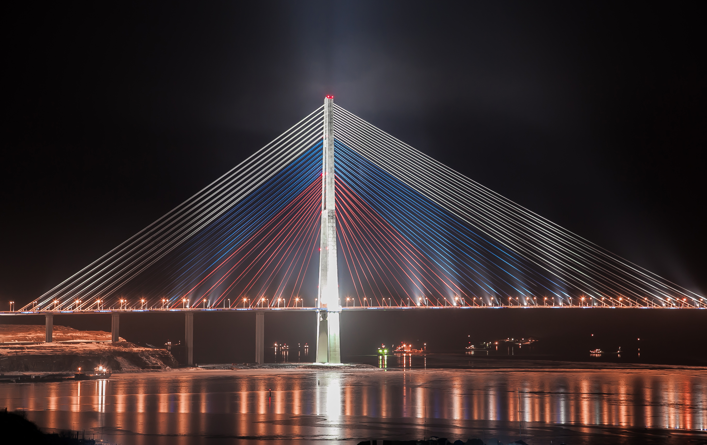
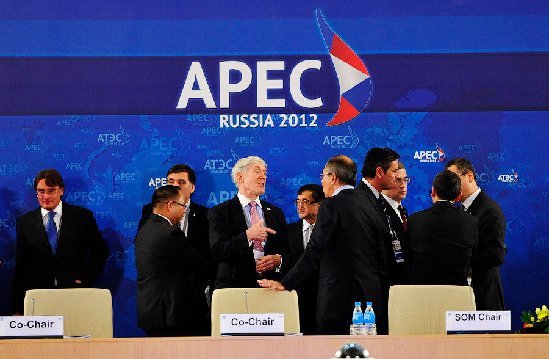
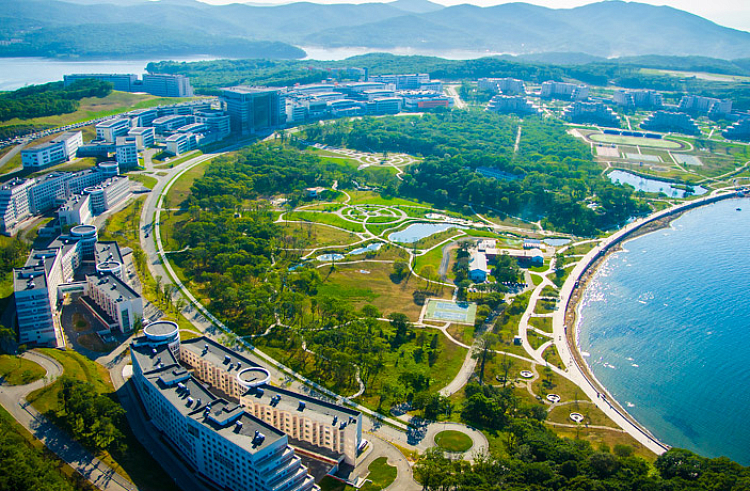

Значимые события
Саммит АТЭС
Большое значение для развития города имел проведённый в сентябре 2012 года на Русском острове саммит АТЭС.
Саммит АТЭС Владивосток-2012 (англ. APEC Vladivostok 2012) — двадцать четвёртая ежегодная встреча лидеров экономик АТЭС, которая проходила во Владивостоке с 2 по 9 сентября 2012 года. Саммит проходил на Русском острове, как было решено в 2007 году. Это был первый и пока единственный саммит АТЭС, который проходил в России. Большая часть объектов саммита построена при кураторстве первого вице-премьера Правительства РФ И. И. Шувалова на Русском острове. Основными объектами саммита являются мосты Золотой и Русский, а также Дальневосточный федеральный университет.
Сам факт, а также обстоятельства подготовки саммита АТЭС на Русском подвергаются резкой критике российской оппозицией. Критика вызвана, в частности, высокой стоимостью возводимых объектов инфраструктуры, в несколько раз превосходящей стоимость подобных объектов в других странах. 
Завершившийся во Владивостоке саммит организации Азиатско-Тихоокеанского экономического сотрудничества (АТЭС) «удивил результативностью и оказался для России неожиданно удачным», отмечалось в прессе. По словам экспертов, традиционно форум АТЭС — это площадка для дискуссий и намётки планов, а не для принятия решений, однако российский саммит стал исключением. По итогам форума в мире заговорили о «восточном развороте» экономики РФ. На площадке АТЭС-2012 встретились лидеры ведущих держав региона (Китая, России, США, Японии), между которыми было подписан ряд соглашений. Первый вице-премьер РФ Игорь Шувалов, отвечавший за подготовку форума, отметил, что саммит АТЭС во Владивостоке должен помочь смещению внешнеторгового баланса России в сторону азиатских стран.
4 ноября 2010 года Владивостоку присвоено почётное звание «Город воинской славы», в 2012 году рядом с памятником «Борцам за власть Советов на Дальнем Востоке» установлена стела «Город воинской славы».
19 ноября 2020 года в Приморском крае прошёл ледяной дождь, сопровождавшийся сильным ветром, что вызвало массовые отключения электричества и другие повреждения инфраструктуры.